AZTMMGaming Labs
AZTMMGaming Labs
The game
Lea is an astronaut who runs. Swipe to change lanes, jump and slide, and hold to fly on the jetpack. The land climbs into ridges and drops into canyons; coins hang along the lanes and in the air, and stars refill the boost.
A Run starts with a quick tour: about fifteen seconds in each world and a little longer in the last three, so all twelve go by in under six minutes. After that a world lasts forty-five seconds. A Calm run gives every world its forty-five seconds from the start, and nothing can end it. Each world ends in a wormhole, a tunnel of light Lea flies down, and between worlds the run crosses a real galaxy, photographed by the Hubble and Webb telescopes.
Boosters float along the lanes and in the air, and drift to Lea in passing: nitro for more than twice the speed, a jetpack, a magnet, a shield, double score, the Fold, which makes every metre count twice, and anti-gravity, which floats everything out of the way. Every world has its storms, from meteor showers to blizzards, and while one blows every coin counts twice.
A run has three lives. Lose one and Lea falls, the music winds down with her, and she gets up where she fell while it picks up at the same bar. After every third world the lives come back.
The music is an original score for orchestra and pipe organ, and it rises with the speed. Six long pieces carry the whole journey, one for each pair of worlds, each with its own pair of solo voices: koto and sitar; nylon guitar and santoor; kalimba and tabla; concert harp and shamisen; upright piano and handpan; and a last piece for the organ, in which every voice of the journey comes back. The first fifteen seconds teach every move, one at a time, and then the run is yours.
- WorldsTwelve, with a galaxy crossing after each
- BoostersSeven, from nitro to anti-gravity
- ControlsSwipe and hold on a phone or tablet; arrow keys and Space on a PC
- DifficultyLearns from your last runs: gentler after a few early crashes, sterner when you are flying
- Plays onAny modern browser, PC, phone and tablet
- ScoresYour three best, and the three best of all players, with no names
- Build5.0.6, November 2026
- FeedbackFound a glitch, or have an idea? game@aztmm.com
Twelve worlds
Every world changes the ground, the hazards, the life and the sky, not only the colours.
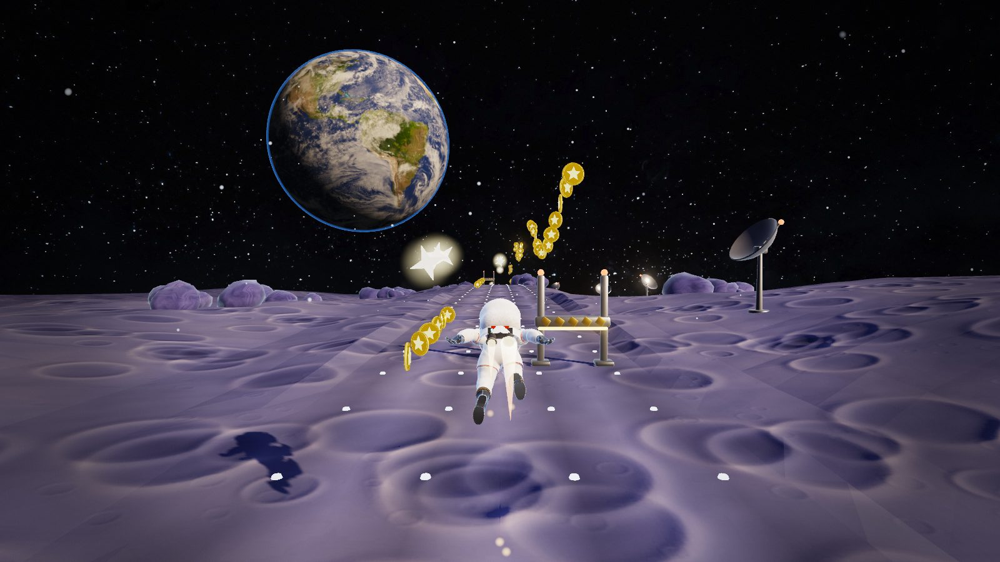


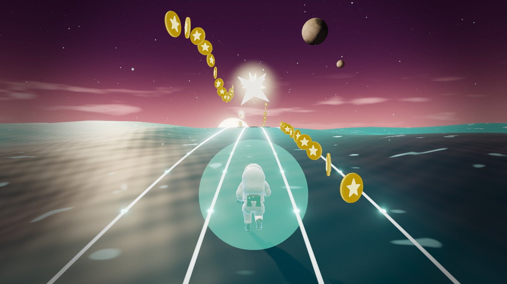
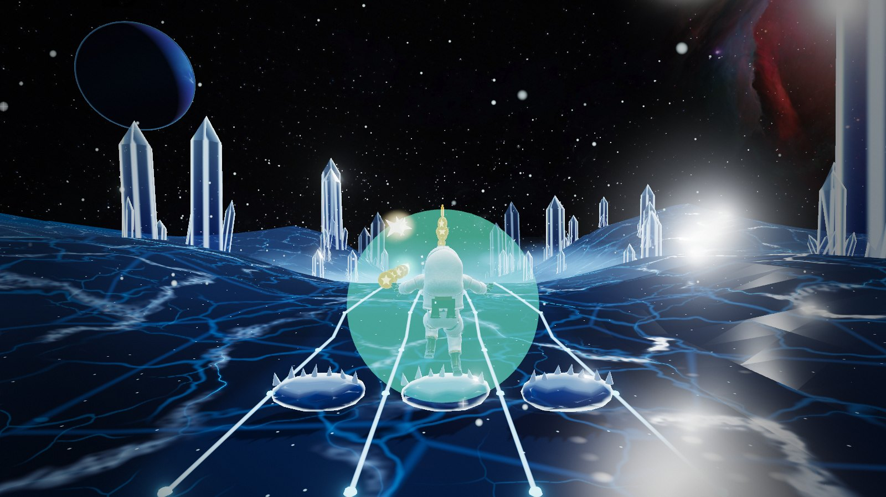
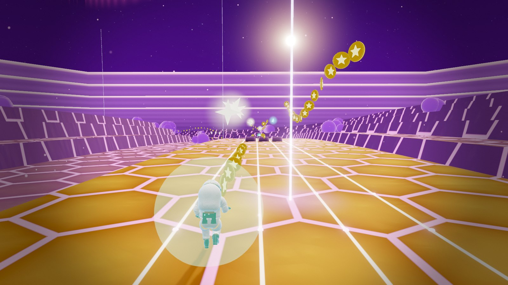
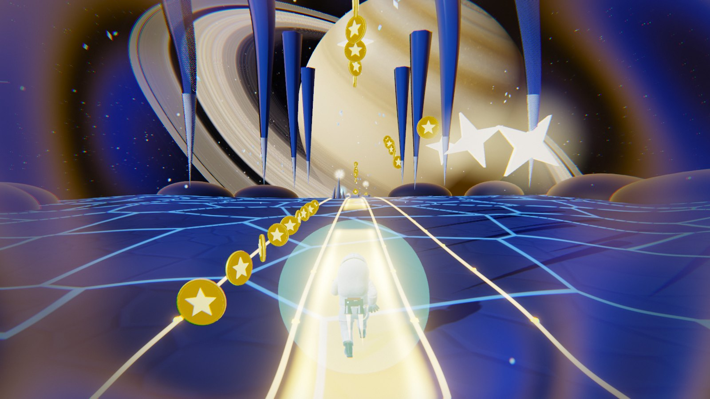
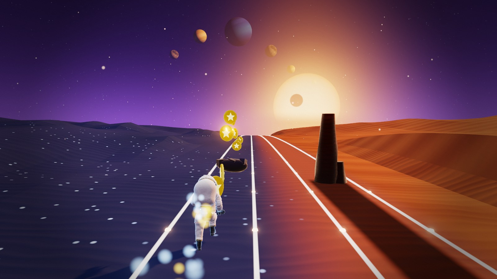
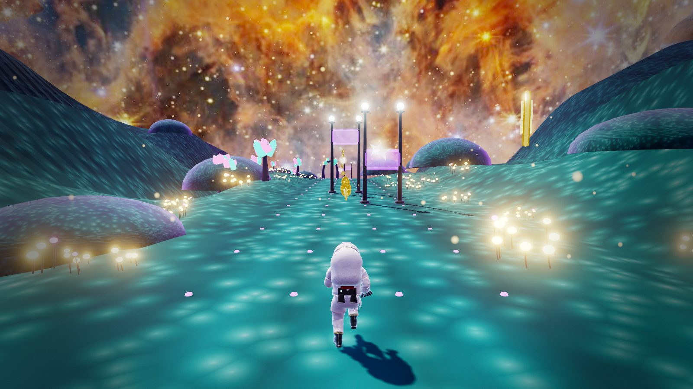
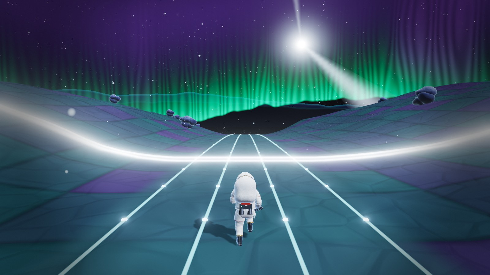
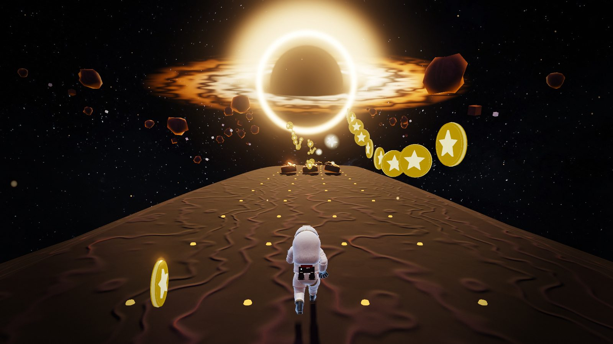
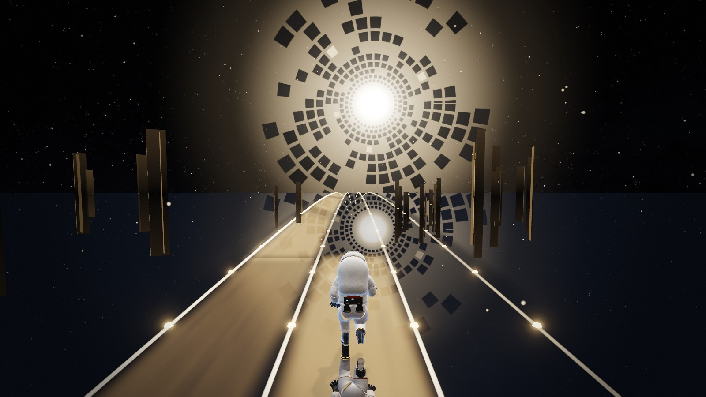
Between the worlds
A wormhole, then a flight through asteroids toward a real galaxy that grows as Lea crosses.
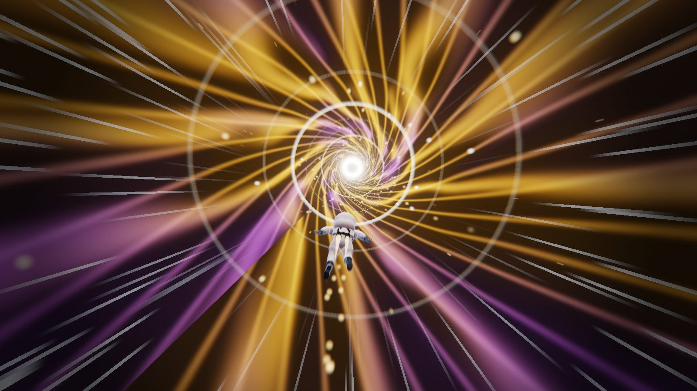

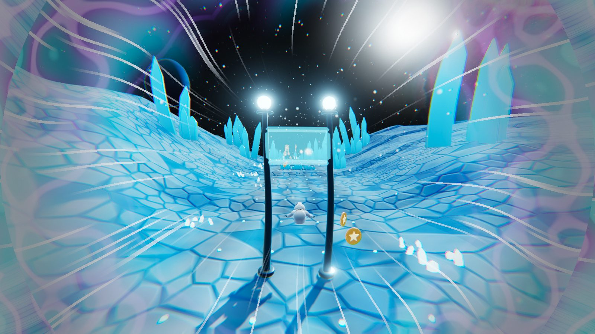
Storyboards
The journey as it was planned, and the hazards and scenery made for every world.


The first cut
Before Lea went to space: one long summer run through wheat, lavender and poppies, set to thirteen original tracks. Pick a track, or let it play.
Trailer 5, the newest
Twelve worlds in twenty-five seconds
Filmed from real play in Lea 5, upright for a phone. Every world gets two beats, cut on the bars of the first long piece from Lea’s own score, for pipe organ, koto and sitar.
Shorts
Earlier trailers
How was your run?
Rate it and tell us what you think: a glitch, an idea, a world you liked. We read every one, and the next build is better for it.
Credits
The galaxies and the nebulae in the game’s skies are real Hubble and Webb photographs, shared under the Creative Commons Attribution 4.0 licence. The Sun over Sunskin is NASA’s own picture, which is not copyrighted.
- Whirlpool GalaxyNASA, ESA, S. Beckwith (STScI) and the Hubble Heritage Team (STScI/AURA)
- Pinwheel GalaxyNASA, ESA, K. Kuntz, F. Bresolin, J. Trauger, J. Mould, Y.-H. Chu, Davide De Martin, STScI
- Orion NebulaNASA, ESA, M. Robberto and the Hubble Space Telescope Orion Treasury Project Team
- Cartwheel GalaxyESA/Webb, NASA & CSA, Webb ERO Production Team
- Stephan's QuintetNASA, ESA, CSA, and STScI
- Tarantula NebulaNASA, ESA, CSA, STScI, Webb ERO Production Team
- Cosmic Cliffs, Carina NebulaNASA, ESA, CSA, and STScI
- Pillars of CreationNASA, ESA, CSA, STScI; J. DePasquale, A. Koekemoer, A. Pagan (STScI)
- The Sun, 31 August 2012NASA/Goddard Space Flight Center/SDO
- Planet and star mapsSolar System Scope
- Lea's suitbased on NASA's public Z2 spacesuit model; no endorsement by NASA is implied